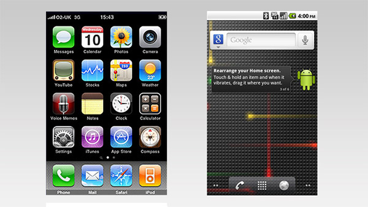

Entre 1995 y 2010 se vivió una transformación sin precedentes en el mundo del software gracias a la expansión masiva de Internet y el surgimiento de la computación móvil. Este período significó el paso del software instalado localmente al acceso remoto mediante navegadores, y posteriormente al software en dispositivos móviles, cambiando para siempre la forma en la que los usuarios interactúan con la tecnología.
Trabajo subida de nota
Era Móvil (1995–2010)
Internet como plataforma global
Navegadores web y correo electrónico
Durante la segunda mitad de los 90, Internet pasó de ser una red académica o de nicho a una herramienta global. Este cambio fue impulsado por el desarrollo de navegadores web cada vez más avanzados y accesibles. Con la expansión del acceso a la red en hogares y empresas, el software web ganó popularidad, permitiendo a los usuarios utilizar aplicaciones sin necesidad de instalarlas físicamente en sus equipos.
La llegada del correo electrónico, los chats y los foros en línea marcaron una nueva era de comunicación digital. El software dejó de ser algo aislado en una máquina y se convirtió en una plataforma interconectada. Además, las primeras plataformas de comercio electrónico y banca en línea comenzaron a surgir, preparando el terreno para un ecosistema digital más sofisticado.
Nacimiento del ecosistema móvil
Dispositivos inteligentes
A finales de los años 2000, el software móvil cambió radicalmente con la llegada de dispositivos inteligentes. El lanzamiento del iPhone en 2007 marcó un hito al combinar un teléfono, un reproductor multimedia y una plataforma de navegación por Internet, todo en un solo dispositivo. Lo más innovador fue la aparición de la App Store, una tienda digital desde la cual los usuarios podían descargar aplicaciones creadas por desarrolladores externos.
Un año después, en 2008, se presentó Android, el sistema operativo móvil de Google. Con su modelo abierto y su compatibilidad con distintos fabricantes, Android ayudó a popularizar el concepto de ecosistema de apps móviles, una red de aplicaciones disponibles para tareas personales, laborales y de entretenimiento.
Esta etapa vio el nacimiento de aplicaciones como navegadores móviles, redes sociales, servicios de mensajería instantánea y herramientas de productividad que cabían en la palma de la mano. El software ya no dependía del lugar donde se usaba, sino de la capacidad de estar siempre conectado.
Transformación del desarrollo y la experiencia de usuario
Experiencia móvil
Los desarrolladores comenzaron a crear aplicaciones centradas en la experiencia móvil, optimizadas para pantallas táctiles, sensores de movimiento y conectividad constante. Esto dio lugar a un nuevo paradigma en el desarrollo de software, donde la adaptabilidad, el rendimiento y la integración con servicios en la nube se volvieron esenciales.
Las empresas también comenzaron a rediseñar sus servicios para adaptarlos a los teléfonos móviles. Bancos, comercios, medios de comunicación y plataformas educativas crearon sus propias aplicaciones móviles, reconociendo el potencial de estos dispositivos como herramientas clave para interactuar con sus usuarios.
En resumen, entre 1995 y 2010, el software pasó de estar ligado a un ordenador a formar parte de un ecosistema móvil global, accesible en cualquier momento y lugar. Esta etapa sentó las bases del mundo digital tal como lo conocemos hoy, donde los dispositivos móviles son el centro de la vida tecnológica cotidiana.
Imágen de iPhone y Android

Rellenar huecos
Lee el siguiente texto y ubica correctamente las palabras dadas para repasar los conceptos clave de esta etapa del desarrollo del software.
Obra publicada con Licencia Creative Commons Reconocimiento Compartir igual 4.0